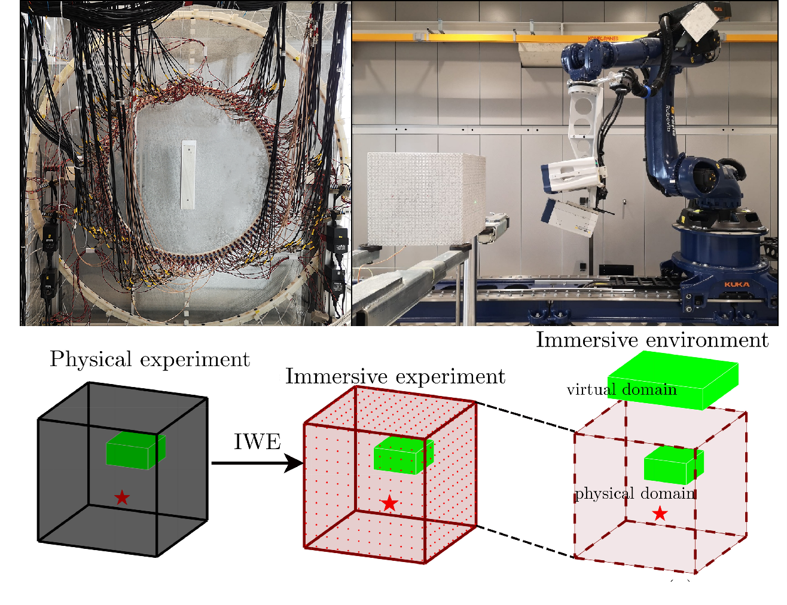
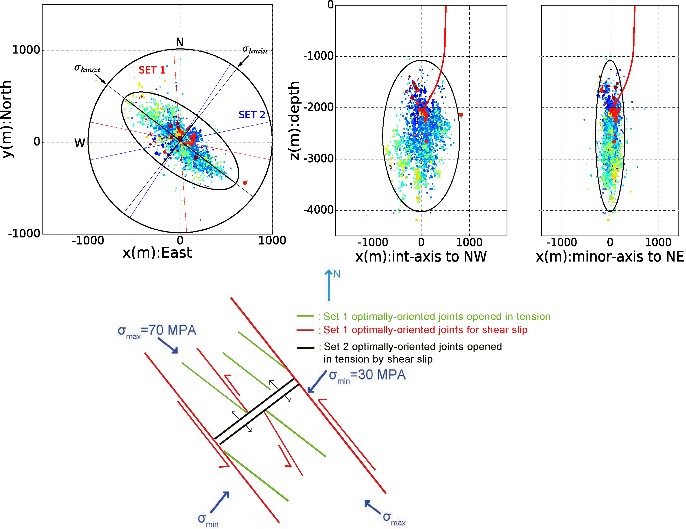
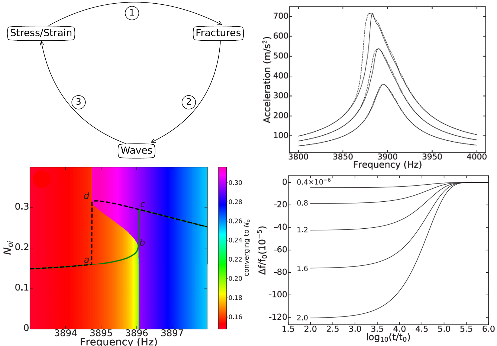
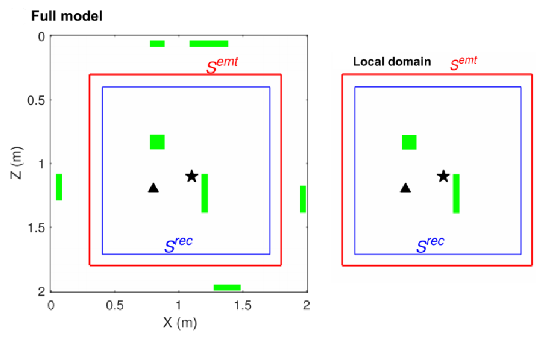
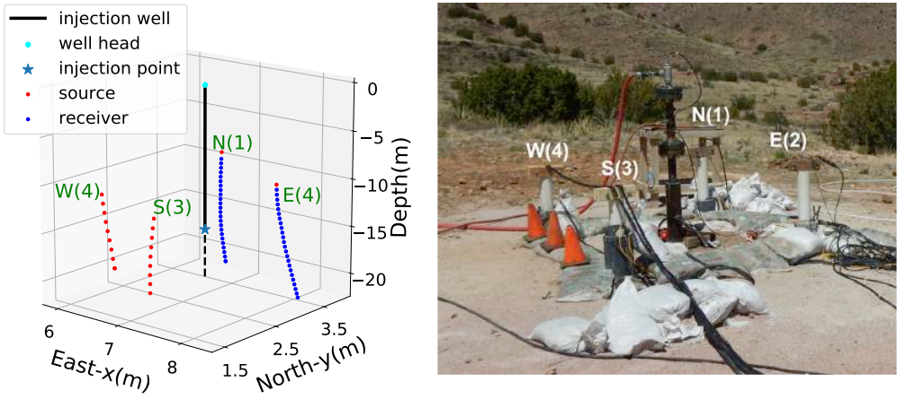

Immersive Wave Experimentation
Mixed-reality acoustics that makes a small laboratory behave as if it were open, with applications in cloaking, holography, and acoustic cloning in controlled experiments.
Read moreI am a geophysicist and postdoctoral researcher at the University of Edinburgh. My work focuses on laboratory seismic and acoustic experiments that reveal how rocks deform, fracture, fail, and recover in geothermal and other subsurface-energy systems.
I am especially interested in the tools that make experiments interpretable: real-time monitoring, acoustic-emission detection, coda-wave analysis, numerical modelling, and data systems that can keep up with large laboratory and field-style data sets.

Mixed-reality acoustics that makes a small laboratory behave as if it were open, with applications in cloaking, holography, and acoustic cloning in controlled experiments.
Read more
Analysis of more than 5,000 microearthquakes at the Rosemanowes geothermal test site, with a focus on pressure diffusion, fracture networks, and aseismic deformation.
Read more
Laboratory resonance experiments and contact-based modelling of nonlinear elasticity, slow dynamics, hysteresis, and recovery in granular rocks.
Read more
Local-domain wave simulation methods that preserve the influence of the surrounding model without recomputing the full wavefield every time.
Read more
Active-source seismic monitoring and coda-wave interferometry for tracking fracture opening, stiffness change, and recovery after injection.
Read moreCodaWaveSolver is a Python-C++ solver for estimating phase shifts with the stretching technique in repeated active-source experiments and ambient-noise studies.
For collaborations in laboratory rock physics, seismic monitoring, wavefield modelling, induced seismicity, or experimental software, please get in touch.
Email lixunjack@gmail.com or connect through LinkedIn.
This website was prepared with AI assistance through Codex, evolving over several years from earlier GPT-4-era support to the most recent GPT 5.5 High Learning Mode provided via the Edinburgh Large Language Model service, ELM: https://elm.edina.ac.uk/elm/elm.
AI assistance was used to help interpret, summarise, structure, and clarify website content based on raw materials, research outputs, code, and documentation from my own work, together with online-accessible materials that were checked and verified while building this website. All final content has been reviewed, edited, and approved by me. This website is still in beta testing, so while care has been taken to ensure accuracy, no guarantee is made that all information is complete, current, or 100% error-free.